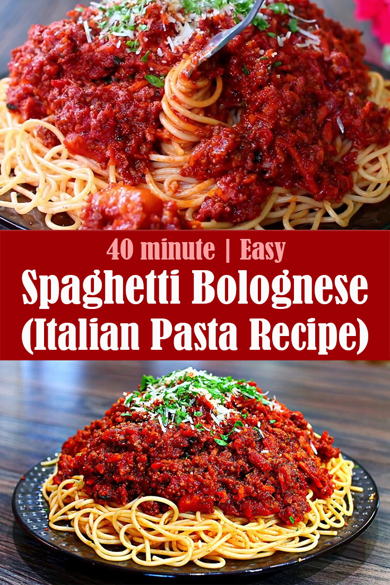

Spaghetti

Spaghetti like home
Ingredients List
- 1 pound spaghetti
- 2 pounds lean ground beef
- 1 onion, minced
- 1 (6 ounce) can tomato paste
- 2 (10.75 ounce) cans condensed tomato soup
- 2 ½ cups water
Steps
-
Step 1 Bring a large pot of lightly salted water to a boil. Add pasta and
cook for 8 to 10 minutes or until al dente; drain.
-
Step 2 In a large skillet over medium heat, cook ground beef with onion
until meat is brown. Drain. Return meat mixture to pan with tomato paste,
tomato soup and water. Cook, stirring, until heated through and thickened,
5 to 15 minutes. Serve over cooked pasta.
Return to main page